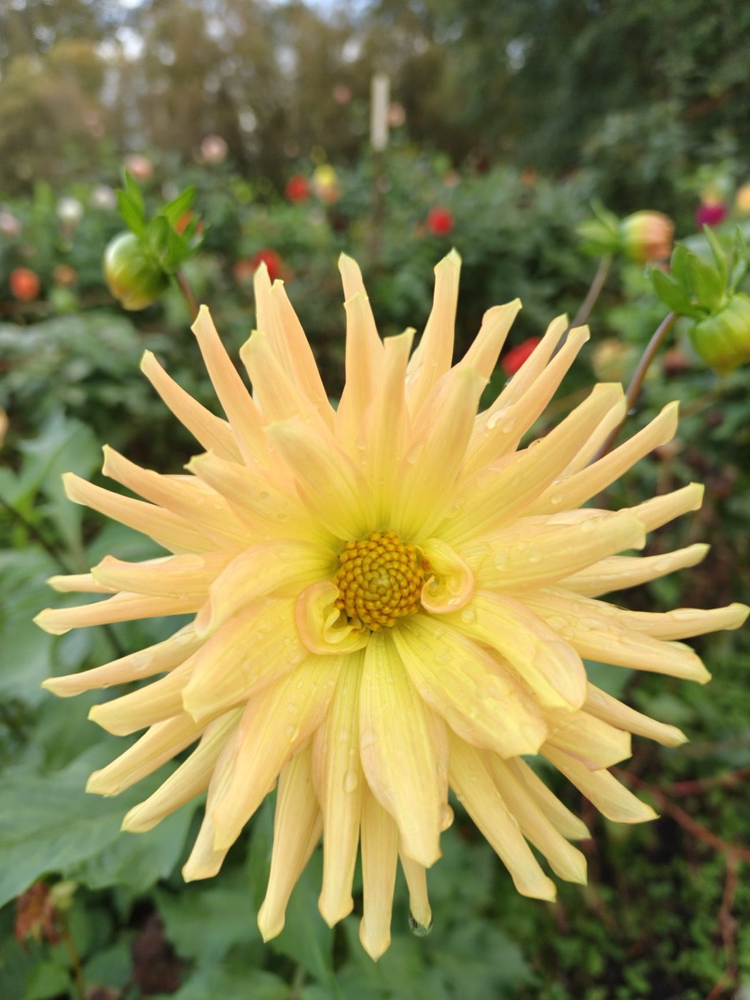

Turn
Each new seed turns ≈137.508° from the previous one.
Golden anglePhyllotaxis
A dahlia follows two rules. Together they optimize packing density and trace Fibonacci spirals.
Scroll down or swipe up

The rules
Each new seed turns ≈137.508° from the previous one.
Golden angleDistance grows with the square root of the seed number: equal-area rings hold equal seed counts.
r = c√n≈137.508° is an irrational fraction of a turn, so it never repeats the same ray exactly. Fractions like 120° (1/3) or 90° (1/4) revisit a few rays, creating rows and gaps; the golden angle distributes successive seeds more evenly around the center.
In the plant. Auxin collects where the next seed will form, while existing primordia (future seeds) suppress it nearby. The model captures the resulting geometry, not the physiology.
Growth
No spiral is drawn directly. Repeat the two rules one seed at a time, and neighboring seeds line up into visible clockwise and counterclockwise paths.
ratio counterclockwise over clockwise: 5 / 3 = 1.667 → φ 1.618
Counts are paths, not seeds. Fibonacci ratios approximate φ: 3/5 → 5/8 → 8/13. Tap a count to trace. Numbers mark seed order; outer numbers index paths.
Live
Away from the golden angle, paths overlap, gaps appear, and the relative packing score falls.
Distinct families: seeds fill the space evenly.
Relative packing score 100%
Relative closest-pair clearance; 100% = golden reference. Not total area density.
The landscape
Across a settled 500-seed pattern, the golden angle is the clear high point. Simple fractions fall into deep troughs.
Relative maximum non-overlap area at 500 seeds; 100% = golden reference. It measures closest-pair clearance, not total occupied area. The mirror pattern repeats from 180° to 360°.
Formula used
pₙ = c√n (cos(nα), sin(nα))
dmin(α) = min‖pᵢ − pⱼ‖ for every seed pair; rseed = dmin / 2; η(α) = Nπrseed² / A; E(α) = 100η(α) / η(αg).
n = seed index; c = scale; α = tested angle; αg = golden angle; dmin = closest seed spacing; rseed = largest equal seed radius without pair overlap; N = seed count; A = fixed region area; η = maximum non-overlap area fraction; E = relative score versus golden.
Underlying placement has a closed form: rₙ = c√n, θₙ = nα, α = 2π(1 − 1/φ), with φ = (1 + √5)/2. This finite-500-seed score curve is numerical, not a single closed-form equation. Reference: Vogel, H. (1979), A better way to construct the sunflower head, Mathematical Biosciences 44, 179–189. DOI 10.1016/0025-5564(79)90080-4.